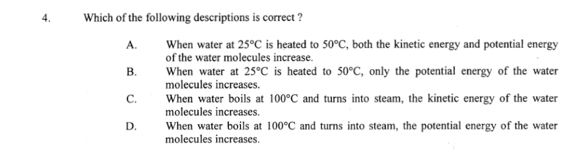

Molecular energy on heating

Section 3.2
A substance can absorb or release energy during a phase change without changing temperature.
Latent heat is the energy absorbed or released by a body while it changes state.
During melting or vaporization, the body absorbs energy. During freezing or condensation, it releases energy. This energy changes the body's internal energy even when its temperature is constant.
On a flat segment, two phases coexist. Energy leaves the body and the liquid fraction shrinks, but average molecular kinetic energy does not change. After the phase change finishes, the temperature can fall again.
A cooling curve is flat while a liquid freezes. Which statement is correct?
D. Bond formation releases energy and lowers molecular potential energy. Temperature and average kinetic energy stay constant.
| Change | Temperature / average KE | Average molecular PE | Energy transfer |
|---|---|---|---|
| Melting or vaporization | constant | increases | absorbed |
| Freezing or condensation | constant | decreases | released |
| Warming or cooling within one phase | changes | approximately constant | absorbed or released |
Internal energy is the sum of molecular kinetic and potential energies. Temperature tracks average kinetic energy, not total internal energy.
Water boils steadily while a heater supplies energy. What changes during boiling?
A. Temperature and average kinetic energy remain constant; energy increases molecular potential energy during vaporization.